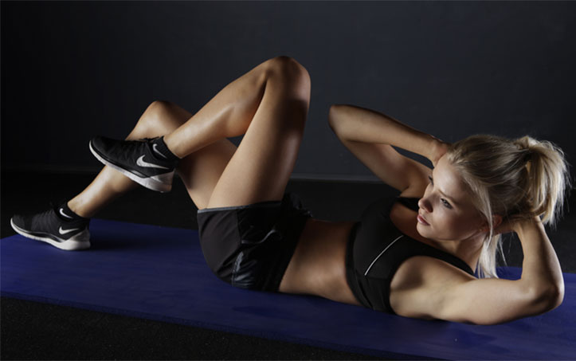

Nagłówek 2
Dlaczego FitStyle? Chesz cieszyć sie dobrym sampoczuciem I lepszą kondycją na codzień? Chcesz zyskać większą pewnosć siebie? Nasza aplikacja ci to ułatwi. Nasza strona da ci możliwość śledzenia postępów w realizacji wyznaczonego przez Ciebie celu, bez względu na to czy chcesz schudnąć, utrzymać wagę czy może ją zwiększyć. Po utworzeniu profilu będziesz mógł/a monitorować dzienne zapotrzebowanie energetyczne, śledzić liczbę kalorii spożytych w ciągu dnia oraz sprawdzać ile jeszcze pozostało do osiągięcia celu. W swojej zakładce bedziesz miał/a również możliwość śledzenia historii swoich postępów.
Jak zacząć?To bardzo proste! Najpierw zarejestruj się na naszej stronie i odpowiedz na kilka pytań odnośnie Twojego stylu życia, sposobu odżywiana, aktywności fizycznej etc. Po przeanalizowaniu tych informacji, na Twoim profilu pojawi się informacja o Twoim dziennym zapotrzebowaniui kaloryczym wraz z opracowana dieta.
